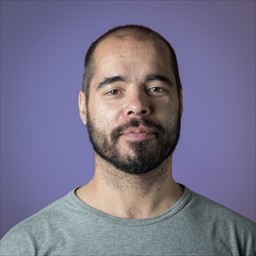

Thanks for visiting my website. Here you can find information related to my ongoing career as a software developer/engineer, as well as links to other things that I’m working on at the moment.
As you can tell from this website, I try to avoid frontend work as much as possible.
Websites should be as minimal as possible.
Also, IF YOU ARE A RECRUITER READ THIS:
I’m only listing technologies I have worked with AND that I’m still interested in working with in the future. I’m classifying my experience/knowledge in each from 1 to 5 stars (*).
Currently I’m studying Crystal and Elixir in my free time. I’m also interested in Rust and Go.
I’m a very big fan of programming languages and I think every programming paradigm has its own place where it shines. The trick is to use what’s best for each problem/challenge.
To be added: courses from LinkedIn learning, pluralsight, coursera and other online platforms.
My blog content can be found here. This is mainly a repository of ideas that range from technical/programming stuff including computer science and creative programming, but also texts related to music, songwriting, arts (traditional and digital) and martial arts.
Here’s a curated list of links I find interesting and/or useful:
Feel free to contact me at: mail ♡ edbrito.pt
Last updated: 2022-01-07